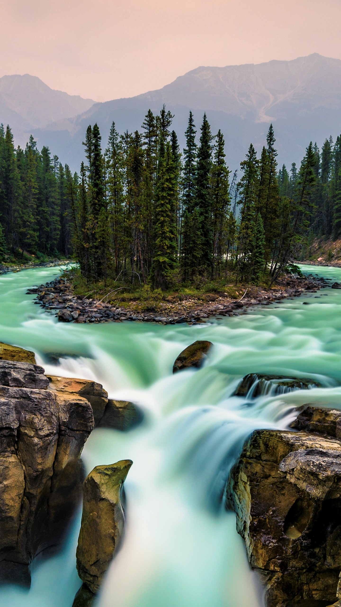

Sport Santé PACA - Toutes les offres Sport Santé de la région !
 Accéder à l'espace membre La LoiSport-Santé sur
ordonnance Recensement
des offres :
Mode d’emploi Patients
pratiquants Professionnels
de la santé Plateformes
d’évaluation /
orientation Contactez-nous
Je recherche une
activité physique
J’oriente
mon patient
contact : contact@paca-sport-sante.fr En collaboration avec © Copyright 2021 - Mon Sport Santé PACA ×
REPRENDRE UNE ACTIVITE PHYSIQUE APRES LE CONFINEMENT
Durant la période de pandémie, nos gouvernants ont exhorté chacun à rester confiné.
Vous n’avez peut-être pas conservé un niveau d’activité physique suffisant pendant le confinement Vous souhaitez tout simplement démarrer une activité physique à l’issue de ce confinement. Vous avez été malades.
IL EST RECOMMANDE DE :
CONSERVER LES GESTES BARRIERES & LA DISTANCIATION PHYSIQUE
En l’absence de traitement, la meilleure des protections pour vous et pour vos proches est de respecter en permanence les mesures barrières et la distanciation physique :
Se laver régulièrement les mains ou utiliser une solution hydro-alcoolique ; Tousser ou éternuer dans son coude ou dans son mouchoir ; Se moucher dans un mouchoir à usage unique puis le jeter ; Eviter de se toucher le visage ; Respecter une distance d’au moins un mètre avec les autres ; Saluer sans serrer la main et arrêter les embrassades. En complément, portez un masque quand la distance d’un mètre ne peut pas être respectée.
PRENDRE RENDEZ-VOUS AVEC VOTRE MEDECIN
Après cette période de confinement, il va être nécessaire de procéder à une évaluation des limitations par votre médecin traitant avant toute reprise des activités physiques “habituelles”, en particulier si :
Vous êtes resté une période longue sans (ou avec peu) d’activités physiques ; Vous avez été sujet à un ou plusieurs événements intercurrents (Covid-19, aggravation de la prévalence de votre maladie chronique ou autre).
Cette évaluation pourra donner lieu à un certificat médical avec des préconisations adaptées sur la durée, fréquence intensité de l’AP de reprise
PRATIQUER UNE ACTIVITE PHYSIQUE
Si votre médecin traitant estime que vous pouvez commencer ou reprendre une activité physique encadrée, il faudra être vigilant sur les points suivants.
Respecter scrupuleusement les conditions et les modalités de reprise fixées par le gouvernement :
Reportez-vous ici pour les connaître .
Les règles de distanciation physique (avis du 24 avril 2020 du Haut Conseil de la Santé Publique) sont les suivantes pour la pratique sportive :
Il convient de prévoir entre deux personnes un espace sans contact au-delà de 1 m : 10 m pour la pratique du vélo et de la course à pied ; 5 m pour la marche rapide ; 1,50 m en latéral entre deux personnes ; Pour les autres activités, prévoir un espace de 4 m² pour chaque participant. Les mesures barrières doivent être maintenues : Lavage fréquent des mains avec du savon ou du gel hydro alcoolique ; Les collations et l’hydratation doivent être gérées individuellement (bouteilles personnalisées, etc.) ; L’échange ou le partage d’effets personnels (serviette…) doit être proscrit ; L’utilisation de matériels sportifs personnels est privilégiée, à défaut, le matériel sportif commun est nettoyé et désinfecté avant et après chaque utilisation ; Le port du masque rend difficile la pratique d’un grand nombre de disciplines sportives. Il se justifie cependant dans certaines situations où les mesures de distanciation ne pourraient pas être strictement respectées.
En cas de symptômes* qui font penser au Covid-19 :
J’arrête toute activité physique (autre qu’à faible intensité comme la marche) pendant au moins 3 semaines à partir de l’apparition des symptômes ; Je reste à domicile, j’évite les contacts, j’appelle un médecin avant de me rendre à son cabinet ou j’appelle le numéro de permanence de soins de ma région. Je peux également bénéficier d’une téléconsultation ; Si les symptômes s’aggravent avec des difficultés respiratoires et signes d’étouffement, j’appelle le SAMU (15) ou j’envoie un message au numéro d’urgence pour les sourds et malentendants (114).
*Rappel des principaux symptômes : fièvre, toux, fatigue inhabituelle, difficultés respiratoires, étouffements, maux de tête, perte du goût et de l’odorat, courbatures, parfois diarrhées.
Fermer En poursuivant votre navigation sur ce site, vous acceptez l’utilisation de cookies pour vous garantir la meilleure expérience sur notre site ainsi que pour réaliser des statistiques de visites. J'accepte En savoir plus